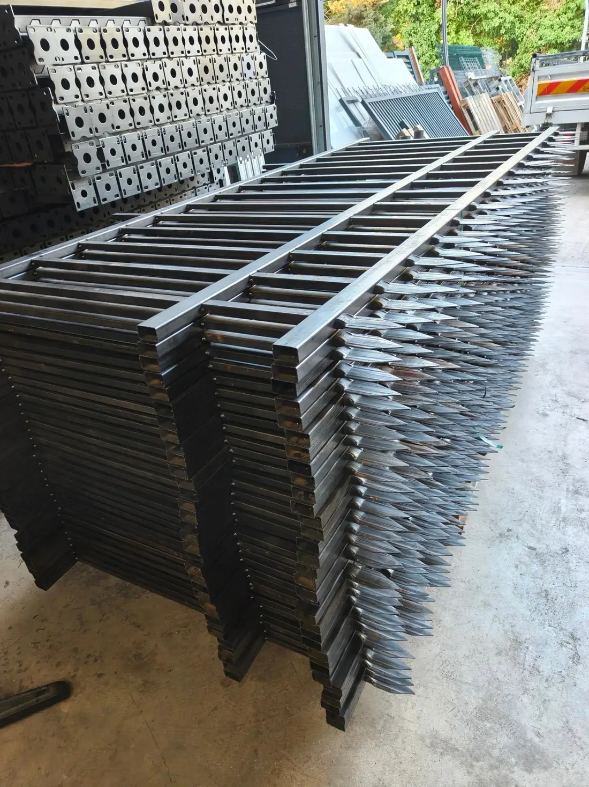
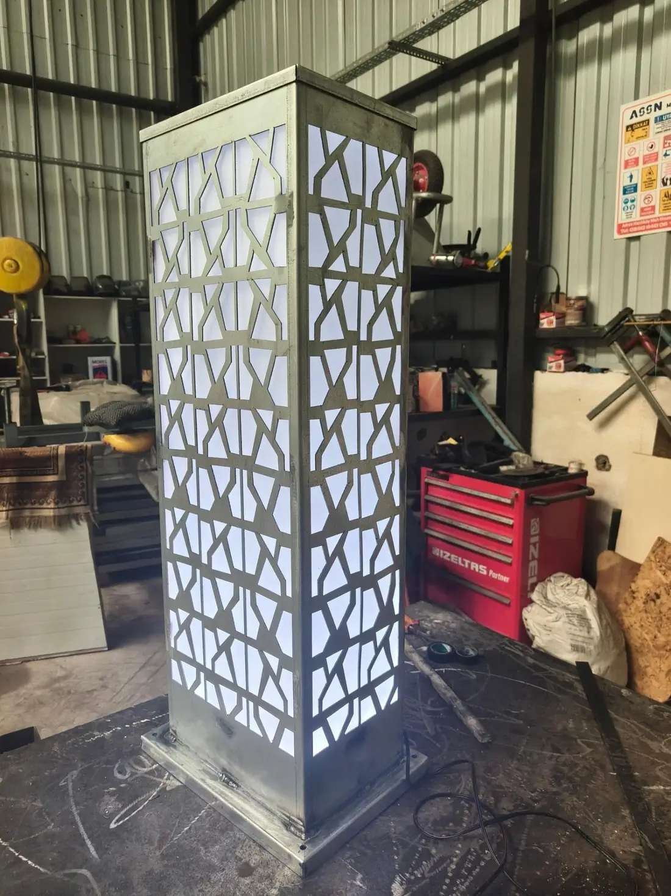
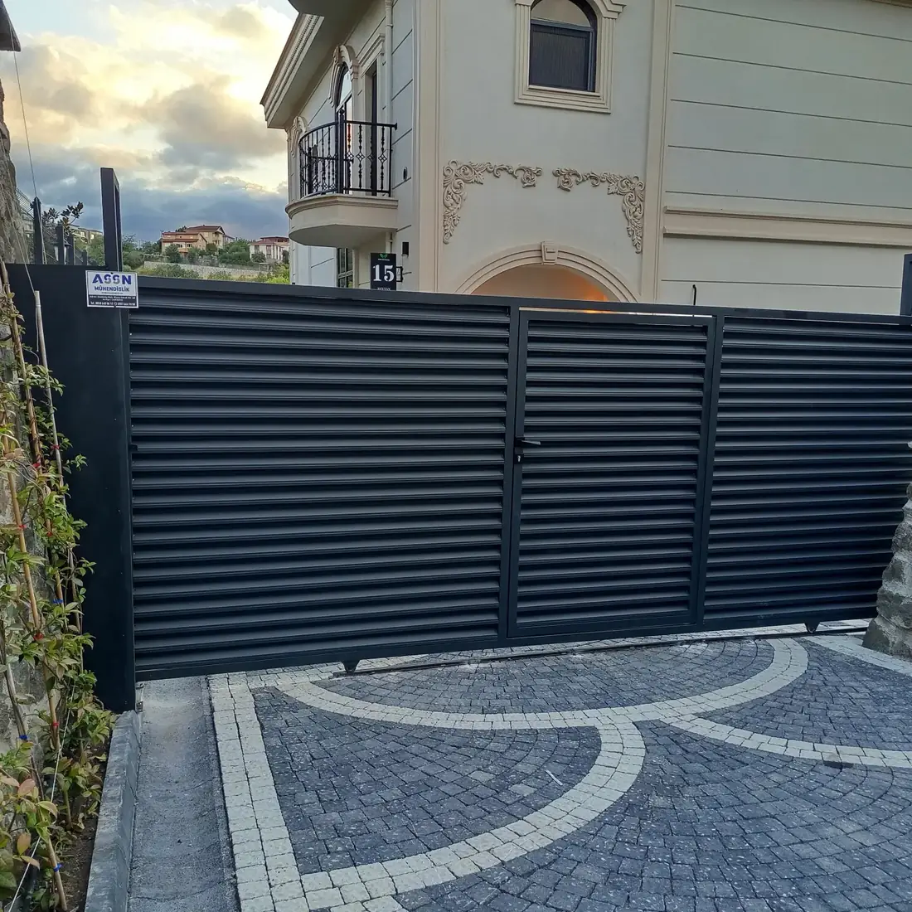
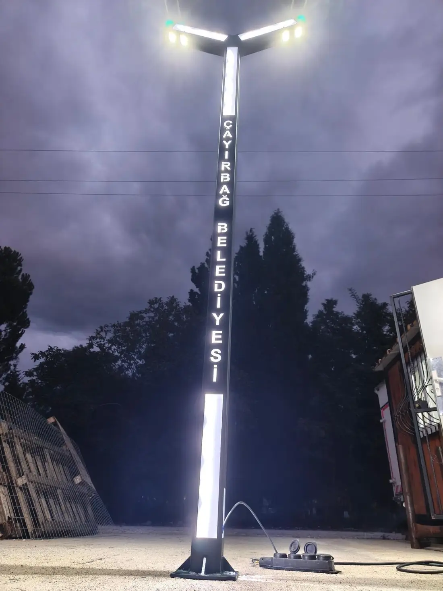
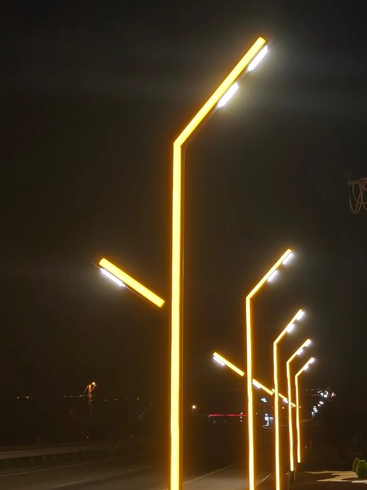
ASSN Mühendislik · Arifiye / Sakarya
Sacdan sokağa.
Sacı atölyemizde kesiyor, büküyor ve boyuyoruz. Çitinizi, kapınızı, tabelanızı ve aydınlatmanızı yerine kendimiz kuruyoruz.
01 · Atölye
Ölçüsünde imalat.
Çit modülleri, kapılar ve kolonlar Arifiye'deki atölyede ölçünüze göre kesilir, kaynaklanır ve boyanır.
02 · Lazer kesim
Desen, ışıkla.
Deseni birlikte çizip lazerde kesiyoruz. İçine LED koyunca kolon, gece bir lambaya dönüşüyor.
03 · Çit & kapı
Sınırı biz çizeriz.
Lamelli çit ve kayar kapı aynı renkte, aynı hatta. Ölçüyü alan ekip montajı da yapıyor.
04 · Totem & tabela
Adınız gece de okunur.
Belediye, site ve işletme girişleri için ışıklı totemler ve kesme harfli tabelalar.
05 · Aydınlatma
Sokağı aydınlatırız.
Açılı kollu LED direkleri üretip zemine sabitliyor, bağlantısını yapıp yakarak teslim ediyoruz.
Ne yapıyoruz
Tek atölye, beş iş.
Sacı kesen, kaynaklayan, boyayan ve sahada kuran aynı ekip. Arada başka el yok.
-
01
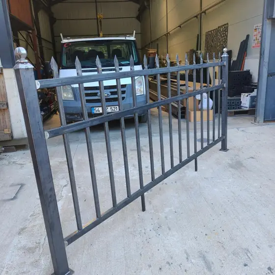
Panel çit & bahçe kapısı
Lamelli ve ferforje çitler, yana açılır ve kayar kapılar. Ölçüyü alıp atölyede üretiyor, kendi ekibimizle kuruyoruz.
- Lamel çit
- Ferforje
- Kayar kapı
- Yana açılır
- Korkuluk
-
02
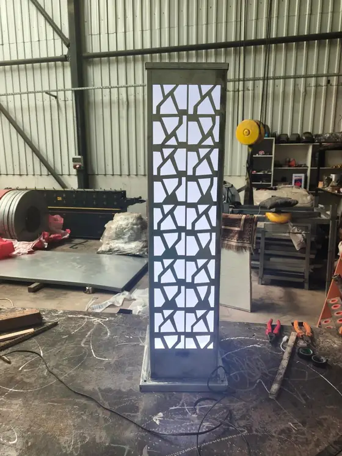
Lazer kesim & dekoratif panel
Kolon, cephe, bahçe paneli ve aydınlatma gövdesi. Deseni birlikte çizip ölçüsüne kesiyor, istenirse içten aydınlatıyoruz.
- Lazer kesim
- Desenli panel
- Işıklı kolon
- Özel desen
-
03
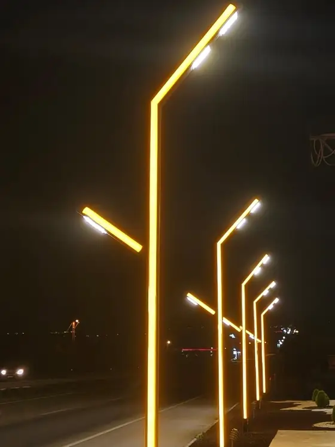
Aydınlatma direkleri
Yol, park ve site içi için açılı kollu LED direkler; yol kenarı ve yürüyüş yolları için alçak armatürler.
- LED direk
- Açılı kol
- Yol aydınlatması
- Bollard
-
04
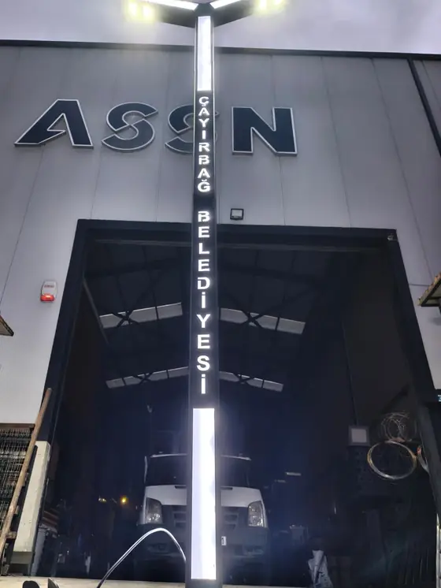
Totem & tabela
Belediye, işletme ve site girişleri için ışıklı totemler, kesme harfli tabelalar. Yurt içine ve yurt dışına gönderiyoruz.
- Işıklı totem
- Kesme harf
- RGB
- Yurt dışı
-
05
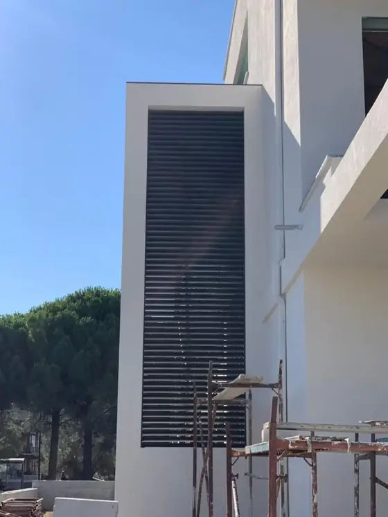
Cephe lamelleri
Bina cephesi, merdiven boşluğu ve teknik hacimler için dikey ve yatay lamel sistemleri.
- Cephe lameli
- Güneş kırıcı
- Havalandırma
Teslim ettiklerimiz
Sahadan kareler.
Sakarya ve çevresinde kurduğumuz çitler, totemler ve aydınlatmalar. Fotoğraflar sahada ve atölyede çekildi.
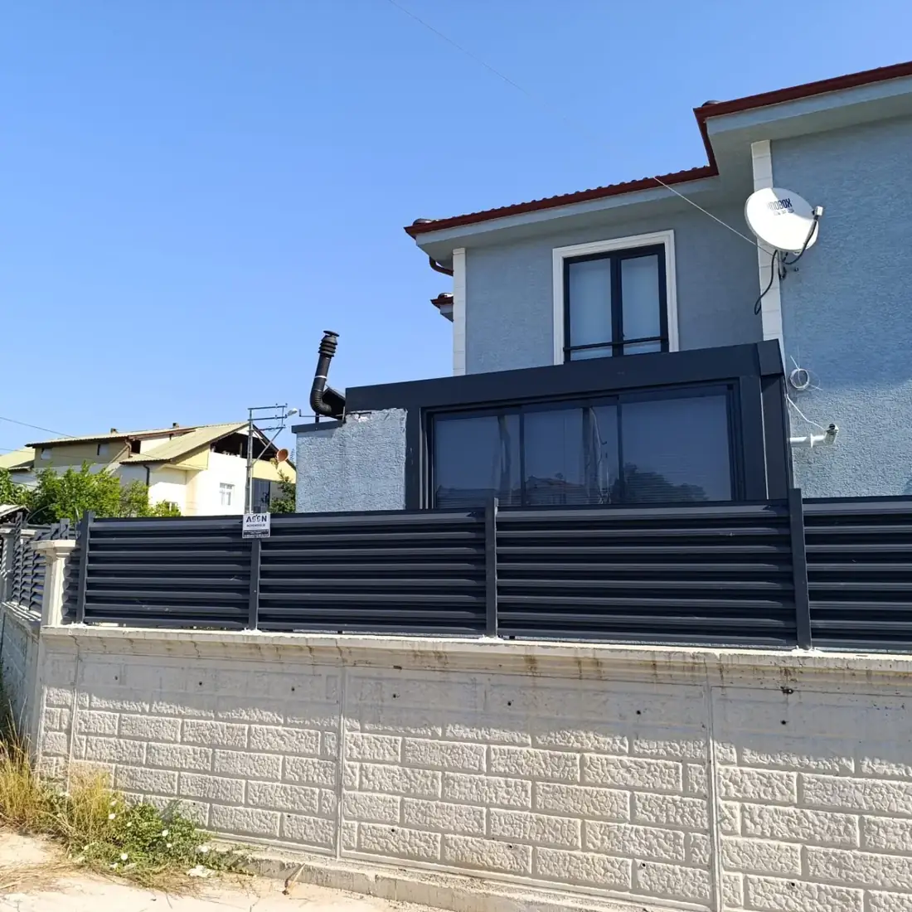
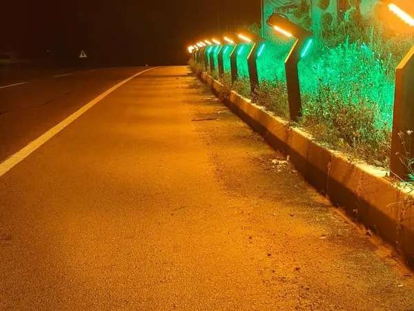
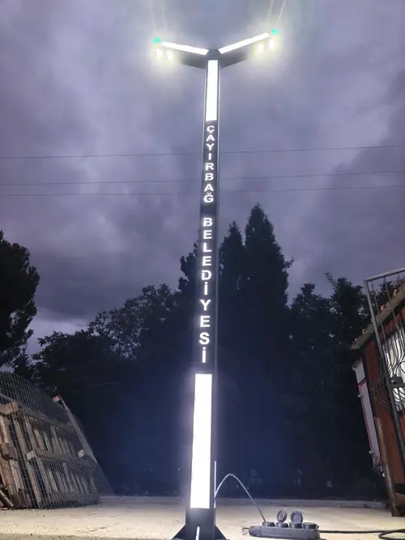
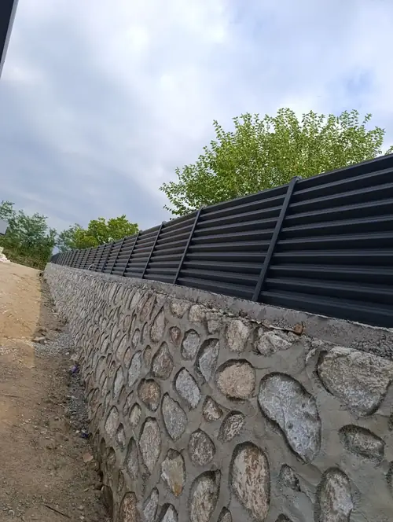
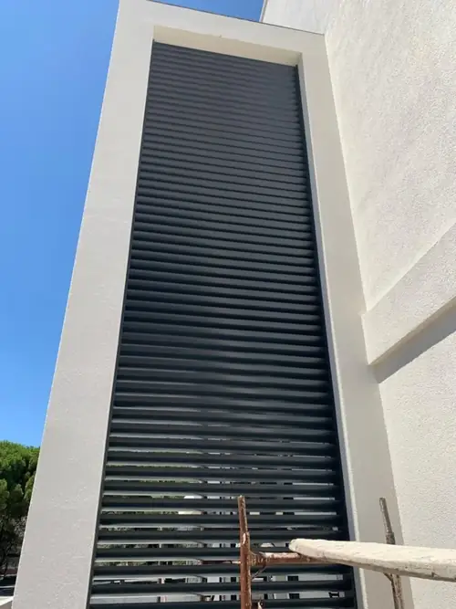
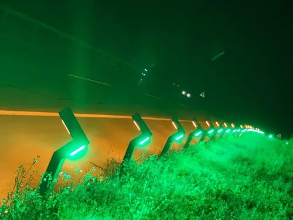
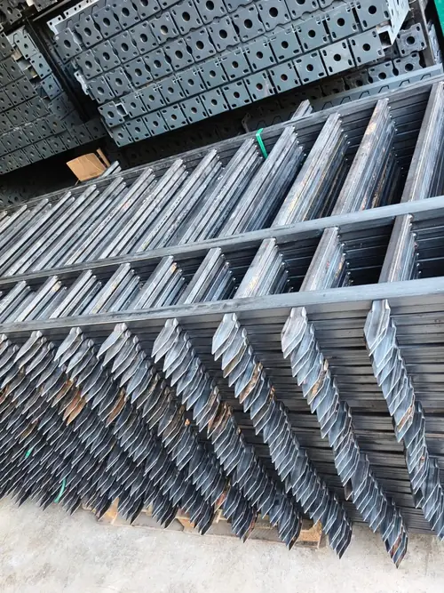
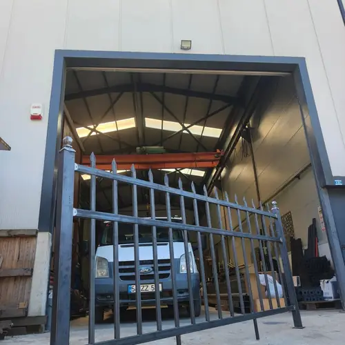
Daha fazlası @assnmuhendislik hesabında.
Instagram'da gör ↗Çit seçici
Çitini seç.
Modeli ve rengi seçin, gerçek bir ASSN çitinde nasıl durduğuna bakın. Gerisini ölçüp yerinde kurarız.
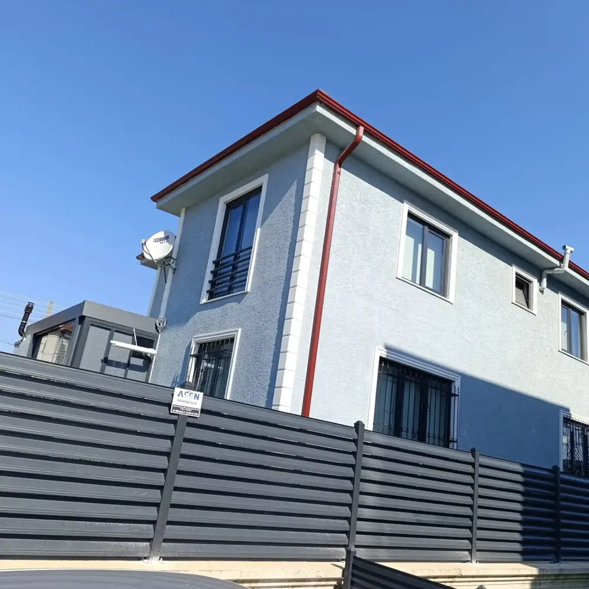
Nasıl çalışıyoruz
Keşiften montaja.
Ölçüyü alan, üreten ve kuran aynı ekip olunca sürpriz çıkmıyor.
- 1
Keşif
Sahaya gelir, ölçü alır, zemini ve ne istediğinizi yerinde konuşuruz.
- 2
Çizim & teklif
Model, renk ve desen netleşir; yazılı teklif ve teslim tarihi verilir.
- 3
İmalat
Lazer kesim, kaynak ve toz boya Arifiye'deki atölyemizde yapılır.
- 4
Montaj & teslim
Kendi ekibimiz kurar; aydınlatma varsa bağlantıyı yapıp yakarak teslim eder.
Yurt dışına gönderim.
Tabela, totem ve panelleri paketleyip yurt içine ve yurt dışına gönderiyoruz. Renkli tabelalarımızdan biri Fransa'ya gitti.
Gönderiyi gör ↗Sık sorulanlar
Aramadan önce.
Fiyatı neler belirliyor?
Çitin uzunluğu ve yüksekliği, model (lamel, ferforje ya da desenli panel), kapı tipi ve zeminin durumu. Keşifte ölçüyü alıp hepsini kalem kalem yazılı teklif olarak veriyoruz.
Sipariş verdikten sonra iş ne kadar sürer?
Ölçüye, modele ve boya sırasına göre değişiyor. Teklifle birlikte üretim ve montaj tarihini de yazılı olarak bildiriyoruz.
Kendi desenimizi ya da logomuzu kestirebilir miyiz?
Evet. Bir çizim, fotoğraf ya da eskiz göndermeniz yeterli. Deseni lazer kesime uygun hale getirip onayınıza sunuyor, onaydan sonra kesime geçiyoruz.
Sakarya dışına da çalışıyor musunuz?
Evet. Montajlı işlerde çevre illere gidiyoruz; tabela, totem ve panel gibi ürünleri paketleyip yurt içine ve yurt dışına gönderiyoruz.
Keşiften önce neye ihtiyacınız var?
Konum, yaklaşık ölçü ve birkaç fotoğraf. WhatsApp'tan göndermeniz keşfi hızlandırır.
Keşif
Ölçüyü biz alalım.
- Atölye
- Arifiye / Sakarya · Yol tarifi ↗
- Telefon
- 0551 644 10 55 · 0541 441 32 55
- @assnmuhendislik · mesajla ulaşın
- Hizmet
- Sakarya ve çevresinde keşif ve montaj · yurt içi ve yurt dışı gönderim